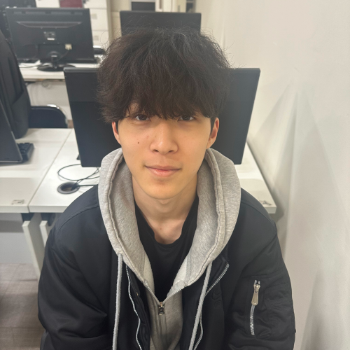

내 컴퓨터
안녕하세요! 웹 디자인과 프론트엔드 기술에 관심을 가지고 있는 남윤서입니다. 국민취업지원제도를 통해서 라인아트컴퓨터학원을 알게되었고 HTML, CSS, JavaScript를 배우고 20살에 취업을 하는 게 저의 목표입니다. 저는 중학교 3학년때 유니티를 이용해서 게임을 만들어본 경험이 있습니다 그 계기로 프로그램 개발 기술을 배우고 도전하는 것을 좋아하며 팀과 협력하여 편리하고 대중적인 웹프로그램을 만드는 데 기여하고 싶습니다.
고등학교에서는 컴퓨터 네트워크를 전공하며 컴퓨터 네트워크에 대한 이해도를 쌓았고, 게임하는 것과 운동하는 것을 좋아합니다. 그중에서도 롤과 배그를 제일 좋아했는데 나도 이렇게 게임을 만들어보고 싶다고 생각해서 유튜브를 통해서 게임프로그래밍과 웹 디자인을 조금씩 배웠습니다. 그 간단한 게임을 만드는데에도 오래걸리고 힘들었지만, 다 만들었을 때의 성취감이 너무 좋았고 저는 컴퓨터에 관련된 것이면 다 배워보고 싶다는 생각을 해서 라인아트컴퓨터학원에서 웹 디자인과 프론트엔드 기술을 배워서 취업을 하고 싶고 고등학교에서 배웠던 것과는 좀 다르고 1년간 공부를 하지 않았기 때문에 느려도 힘들어도 포기하지 않고 열심히 배워서 웹 디자인과 프론트엔드 기술을 마스터하고 싶습니다.